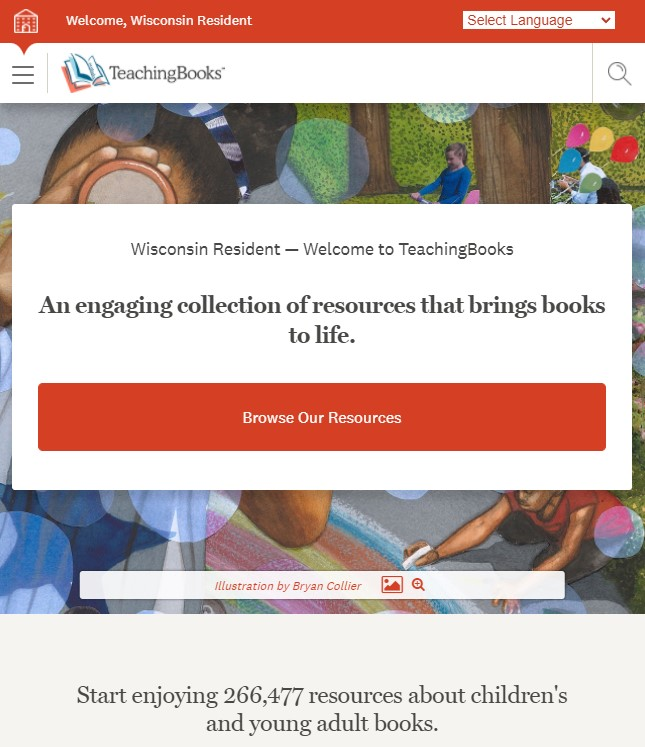
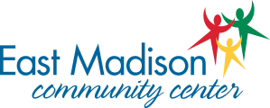

|
My name is Rosee and I am an undergraduate at UW-Madison's College of Letters and Sciences. By the end of this fall I will be graduating with a Bachelor of Science in Communication Arts - Radio, Television, Film track. Additionally, I am pursing the Digital Cinema Production and Digital Studies Certificate. I would like to be in either the Video Production field or the Administration/Communications field. I have come to realize the beauty and enjoyment that comes from creating a flawless film. But I also recognize and value the importance of communication and the various new ways that exist today. Together, I am proud to have pursued two of my interests and a student of the University of Wisconsin - Madison. |
|  |
I am currently working for a wonderful organization called TeachingBooks. TeachingBooks' mission is to equitably give all readers insights and opportunities that deepen their understanding and joy of the books they are reading. We have the honor of collaborating with libraries, universities, and K-12 schools all over the world to provide an online literary database for enhancing reading enjoyment, interests, cultural experience and more. My job as an Account Support Administrator is to set up new licenses into the TeachingBooks.net database and processing renewals for our current customers while simultaneously collaborating with our Bookkeeper. Additionally, I handle invoices and customer service over email and phone. What I enjoy the most is maintaining data integrity and assisting with administrative tasks. |
|
From 2013-2017, I worked at a local community center that I attended as a child called the East Madison Community Center. I spent four years mentoring children from the ages of 5 to 14. Not only did we provide youth developement programs, but I would help the EMCC host community holiday events. There was nothing better than working for an organization whose mission is to equitably provide every young children an adventurous and rewarding journey. Thank you for everything you've done for me and what you've done for all the adolecents who attend today. |
 |